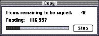
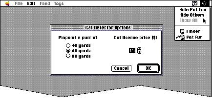

|
Movable Modal Dialog Box BehaviorsMovable modal dialog boxes should respond like modal dialog boxes in most ways. (See the section "Modal Dialog Boxes" on page 187 for a discussion of modal dialog boxes.) You must make certain that the dialog box is modal within your application. That is, the user should not be able to switch to another of your application's windows while the dialog box is active.For movable modal dialog boxes, there are certain behaviors you need to support. Allow your application to run in the background when you display a movable modal dialog box. For example, System 7 uses movable modal dialog boxes to show that an application is busy with a time-consuming operation, yet a user can still switch the application to the background. Figure 6-10 shows a movable modal dialog box displayed by the Finder when it is copying files. Figure 6-10 A Finder movable modal dialog box  Menu Bar AccessWhen your application displays a movable modal dialog box, the system software enables the Application menu, the Help menu, and the Keyboard menu; the system software does nothing else to manage the menu bar. Your application should allow or disallow access to the rest of your menu bar as appropriate. Your application should leave the Apple menu enabled so that the user can use it to open other applications while the movable modal dialog box is on the screen. Also, if the movable modal dialog box contains editable text items, your application should enable the Cut, Copy, and Paste commands in the Edit menu as well as other context-appropriate commands in the Edit menu and other menus. Note that it is the responsibility of your application to always restore the menus to their previous states after removing movable modal dialog boxes. Figure 6-11 shows the Application menu open while a movable modal dialog box is on the screen.Figure 6-11 Menu bar access while a movable modal dialog box is open  |